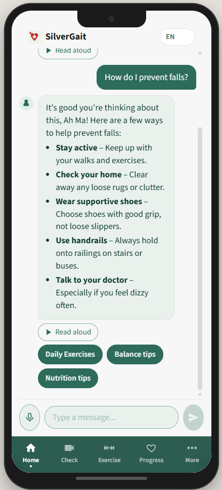
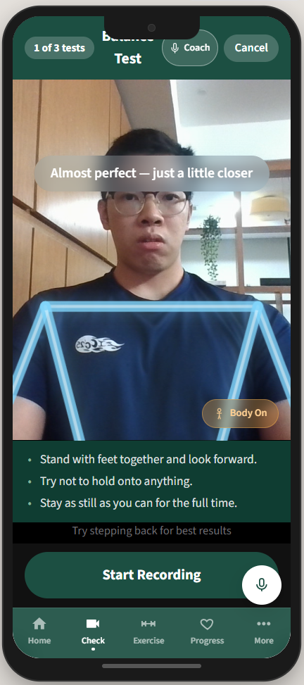
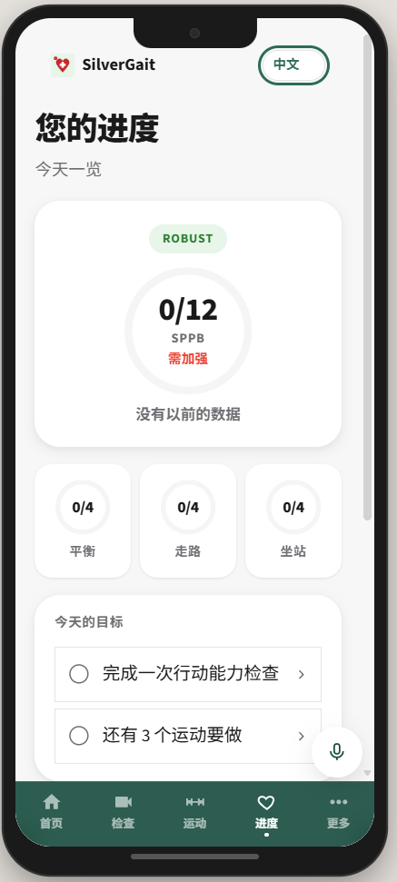
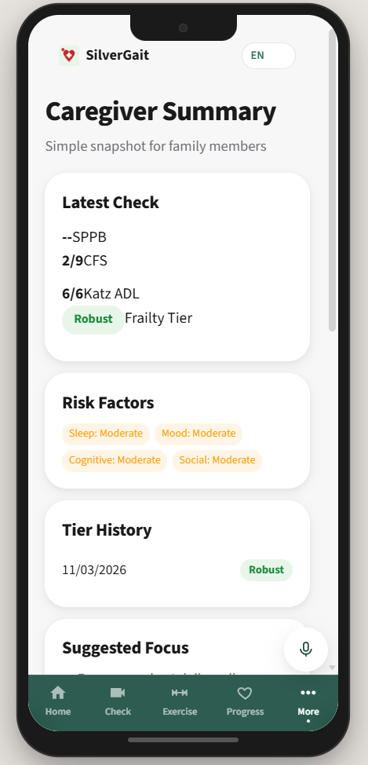

An AI-powered physiotherapy companion that turns any smartphone into a mobility assessment tool for Singapore's ageing population. Pure computer vision — no wearables, no sensors, no clinic visits.

AI Chat

Video Assessment

SPPB Scoring

Caregiver View
SPPB assessment via phone camera with real-time pose detection and biomechanical metric extraction
Tier-personalised exercise plans with live form feedback and progressive difficulty
Gemini-powered companion with RAG-grounded health education and function calling
Multilingual emergency detection, auto-escalation to caregivers, deterministic scoring
SPPB score history, exercise streaks, trend analysis, and weekly reports
Clinical view with frailty scores, alerts, care plans, and shareable reports
Dive deeper into how SilverGait works — from the LangGraph agent pipelines to the biomechanical scoring algorithms.
Two-graph LangGraph system, database schema, RAG pipeline, patient safety guardrails, voice cloning for familiar voices, and API endpoints.
Visual flow diagrams of the Assessment Graph (deterministic scoring) and Chat Graph (Gemini function calling to 4 management sub-agents).
Why keypoint-based pose estimation over full video classification. MoveNet biomechanical metrics, SPPB clinical cutoffs (Guralnik 1994), and hybrid AI scoring.
Peer-reviewed research grounding every design decision — SPPB validity, smartphone gait analysis, Otago exercise programme, CBT-I for sleep, fall prevention.
Full source code, setup instructions, and deployment guide. React + FastAPI + LangGraph + Gemini.